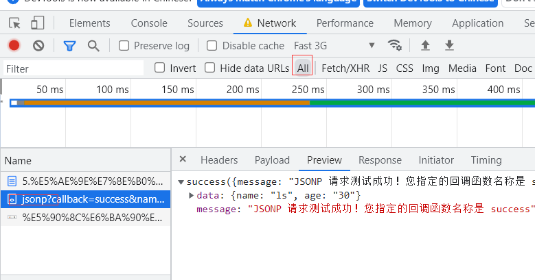
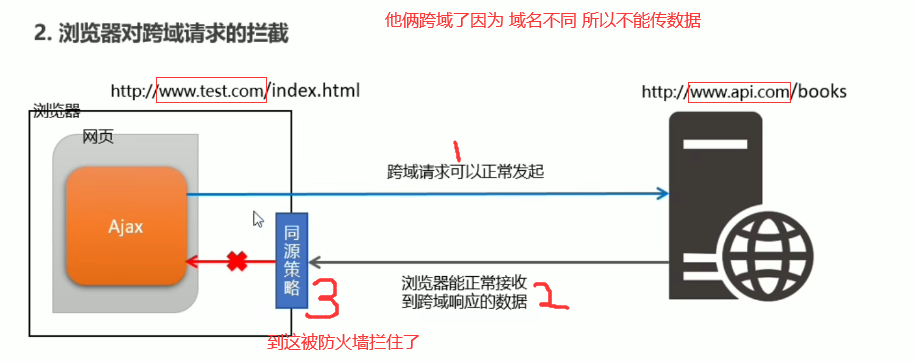

http://ajax.frontend.itheima.net:3006 请求的根路径
api/jsonp?callback=abc&name=ls&age=30 具体的接口地址
callback=abc&name=ls&age=30 告诉服务器你需要调用什么函数需要返回一个什么样的函数调用 同时向JSONP的接口里传了一些数据
实际上是你自己写的函数名，让服务器来调用，你写的数据要服务器有才能返回
这里看清楚了，这个函数名只跟你本地定义的有关，跟服务器没有关系的，服务器会根据函数名生成对应函数调用，并携带data参数返回到你的页面上，然后调用对应方法
你写什么这里是这样的，你函数名可以随便写，但是你自己页面要有这个函数，服务器会返回你发过去的函数名的调用，并携带你请求的数据过来
//此时我们还没有发起ajax请求 因为 控制台哪个XHR没有东西 在all中找JSONP?那个 
JSONP并不属于Ajax请求 他就是ajax服务器返回数据时候的一个门禁卡
 在步骤3那需要JSONP
注意: JSONP和 Ajax之间没有任何关系，不能把JSONP请求数据的方式叫做Ajax，
因为JSONP没有用到xMLHhtpRequest这个对象。